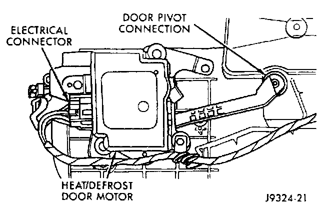

Heat/Defrost & Panel/Defrost Door Motor Replacement
The content of this article reflects changes called for in TSB 26-12-96.
HEAT/DEFROST - PANEL/DEFROST DOOR MOTOR
This motor is used only on models equipped with the optional Automatic Temperature Control (ATC) system.
REMOVAL
1. Disconnect and isolate the battery negative cable.
2. Remove the two bolts that secure the center instrument panel support bracket to the left side of the floor pan transmission tunnel.
3. Remove the two bolts that secure the center instrument panel support bracket to the instrument panel.
4. Remove the center instrument panel support bracket from the vehicle.

5. Unplug the wire harness connector from the motor.
6. Remove the three screws that secure the motor to the bottom of the heater-A/C housing.
7. Remove the motor from the housing.
INSTALLATION
1. Position the heat/defrost - panel/defrost door motor to the bottom of the heater-A/C housing.
2. Install and tighten the three screws that secure the motor to the housing.
3. Plug in the wire harness connector to the motor.
4. Position the center instrument panel support bracket to the instrument panel.
5. Install and tighten the two bolts that secure the center instrument panel support bracket to the instrument panel.
6. Install and tighten the two bolts that secure the center instrument panel support bracket to the left side of the floor pan transmission tunnel.
7. Connect the battery negative cable.